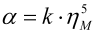

|
|
|


AGMA 925
在此输入窗口中，您可以指定胶合和磨损的概率，以及微点蚀（霜化）的敏感性，如 AGMA 925 中规定的那样。
AGMA 925-A03 润滑对齿轮表面损伤的影响计算了齿轮啮合过程中的润滑间隙状况。AGMA 925 定义了如何在考虑齿面变形、润滑剂性能、滑动速度和局部赫兹应力的同时计算润滑间隙高度。然后，该标准使用这些基础数据来计算磨损概率。磨损是由润滑间隙过窄时金属表面相互接触引起的。该标准计算的磨损概率大于实际发生的值。
该标准未给出关于微点蚀（霜化）安全性的任何说明。但是，相关技术文献提供的数据和研究结果表明，最小润滑间隙与表面粗糙度之比与微点蚀（霜化）的发生之间存在直接相关性。因此，您可以使用此计算方法来针对微点蚀（霜化）优化轮齿。AGMA 925 还包括胶合概率的定义。该分析使用的基础数据与 DIN 3990 第 4 部分中按闪温准则计算胶合所用的相同（Blok 方程）。但是，根据 AGMA 925 确定许用胶合温度则更成问题，因为缺乏全面或普遍适用的信息。特别是，没有像 FZG 测试中给出的胶合承载能力规范那样的参考。因此，存在低估具有有效 EP 添加剂的油的倾向。
典型齿轮箱油的压力-粘度系数 α 的值在 0.00725mm2/N 和 0.029 mm2/N 之间变化，在 AGMA 925-A03 中定义如下：
|  | (14.25) |
其中
| α | 压力-粘度系数 | mm2/N |
| k | 参见 AGMA 925-A03 中的表 2 | - |
| ηM | 齿温 θM 下的动力粘度 | mPa . s |
实际上，根据 Wellauer 计算磨损会导致磨损风险值过高。因此，分析按 Dowson 的方法进行（如 AGMA 925 附录 E 中那样）。报告会显示两种方法的结果。
AGMA 925
In this input window, you can specify the probability of scuffing and wear and the susceptibility to micropitting (frosting), as specified in AGMA 925.
AGMA 925-A03 Effect of Lubrication on Gear Surface Distress calculates the conditions in the lubrication gap across the gear meshing. AGMA 925 defines how to calculate the lubrication gap height while taking into account the flank deformation, lubricant properties, sliding velocity, and local Hertzian stress. The standard then uses this base data to calculate the probability of wear. The wear is caused by the metal surfaces contacting each other if the lubrication gap is too narrow. The probability of wear calculated by the standard is greater than the values that occur in practice.
The standard does not give any indications about safety against micropitting (frosting). However, data provided by the relevant technical literature, and the results of research, reveal that there is a direct correlation between the minimum lubrication gap-to-surface roughness ratio and the occurrence of micropitting (frosting). You can therefore use this calculation method to optimize gear teeth for micropitting (frosting). AGMA 925 also includes a definition of the probability of scuffing. This analysis uses the same base data (Blok's equations) as the calculation of scuffing according to the flash temperature criteria given in DIN 3990, Part 4. However, defining the permitted scuffing temperature according to AGMA 925 presents more of a problem, because of the lack of comprehensive or generally applicable information. In particular, there is no reference to a scuffing load capacity specification as given in the FZG test. There is therefore a tendency to underevaluate oils that have effective EP additives.
The values for the pressure-viscosity coefficient α of typical gear unit oils vary between 0.00725mm2/N and 0.029 mm2/N, and are defined as follows in AGMA 925-A03:
| (14.25) |
where
| α | pressure-viscosity coefficient | mm2/N |
| k | see Table 2 in AGMA 925-A03 | - |
| ηM | dynamic viscosity for tooth temperature θM | mPa . s |
In practice, calculating wear according to Wellauer results in risk of wear values that are too high. For this reason, the analysis is performed according to Dowson (as in Annex E of AGMA 925). The report shows the results for both methods.